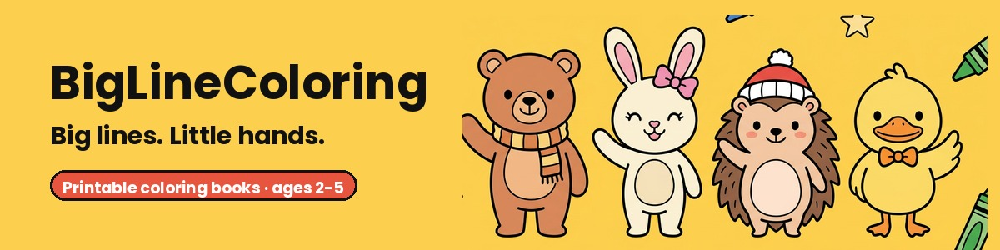

Printable coloring books for toddlers, ages 2-5: extra-thick lines, big simple shapes and no tiny details. Levels 1-3, and the child's name on the cover if you like.
Free toddler coloring pages · Shop on Etsy